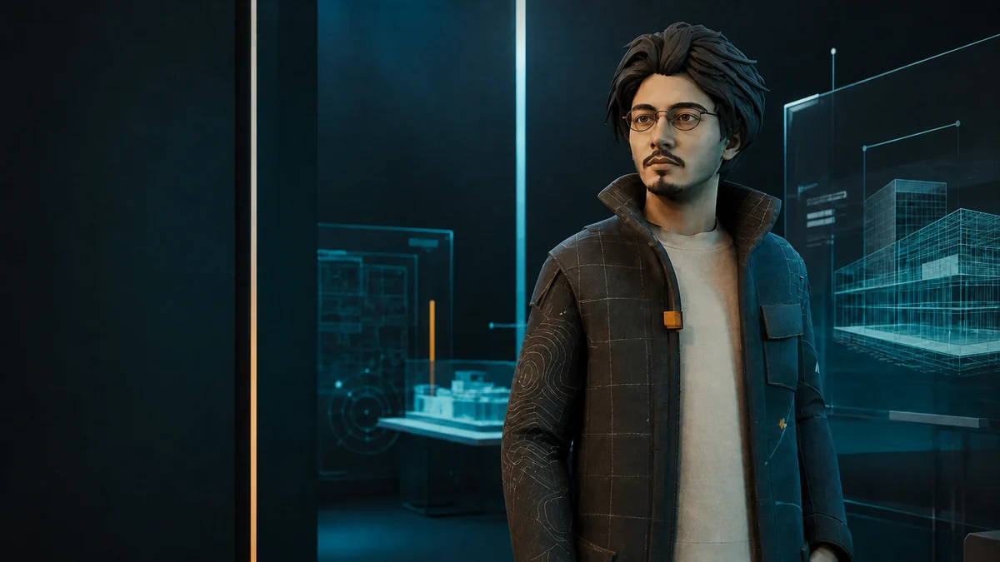

Continuous motion
Authored greeting, start, explanation and idle states transition through dedicated blended clips instead of teleporting between poses.
Interactive AI System / WebGL
A browser-based 3D character combining authored animation, continuous gesture blending, speech-driven lip movement, controlled AI context and graceful fallbacks.
Drag to inspect · scroll to zoom · ask a question by voice or text
Engineering evidence
The work is the orchestration: animation, speech, interaction, rendering and failure recovery operating as one coherent browser system.
Authored greeting, start, explanation and idle states transition through dedicated blended clips instead of teleporting between poses.
Generated or browser speech drives viseme targets and body-performance timing while protecting the first spoken words with audio readiness checks.
Answers are grounded in a maintained professional source of truth rather than pretending to know unrestricted personal information.
Text remains usable when WebGL, microphone access, speech recognition, transcription or generated audio is unavailable.

Visual direction
The character deliberately avoids the generic metaverse-avatar look. Layered paper materials, an architectural studio, dimensional shadows and controlled aqua-and-amber light connect the 3D experience to Sadeq's wider editorial portfolio identity.
System architecture